进入自己的个人网站
个人网站仓库地址： https://github.com/Tao-oooo/Tao-oooo.github.io.git 去掉中间部分即为个人网站地址 https://tao-oooo.github.io/
Github仓库中创建文件夹
- 点击Create New File
- 输入文件夹名字
输入名字后这里还是File，这时需要在名字后加上”/“，此时会自动生成文件夹
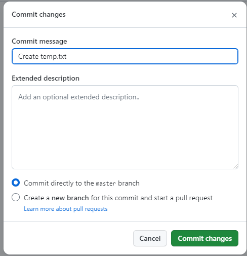
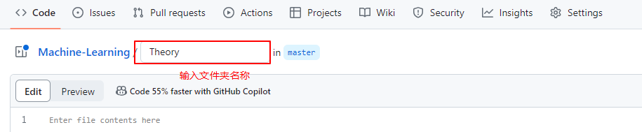
因为Github不允许创建空文件，因此需要新建一个临时文件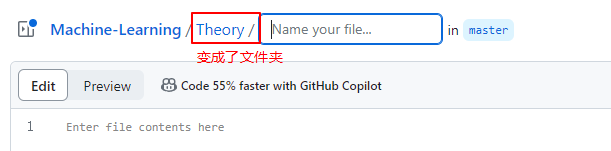
然后点击右上角“Commit changes”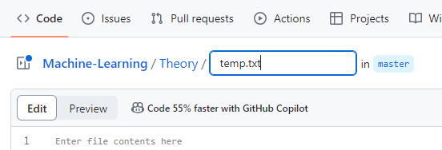
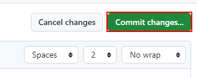
初次使用Github上传代码
在 Github 上创建新的仓库
这边可以看网上的资料创建仓库。
安装 Git 工具包
Git 工具包可以去官方网站下载，并安装。 安装完成后，Windows 系统的开始菜单中会有 Git 软件，如下图所示：
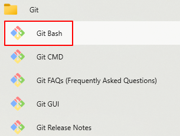
其中， Git Bash 就是 Git 工具的命令行窗口，后续的 GitHub 相关操作都会在此命令行窗口中执行。本地生成 SSH Key
在 GitHub 上添加 SSH Key 之前需要在本地先生成 SSH Key。
打开上面讲到的 Git Bash 命令行窗口，先使用以下命令配置一下 Git Config：
1
2git config --global user.name "username"
git config --global user.email "emile-name@email.com"username 和 emile-name@email.com
的信息要与 Github 上申请的账号一致。
然后通过以下命令生成 SSH Key： 1
ssh-keygen -t rsa -C "emile-name@email.com"
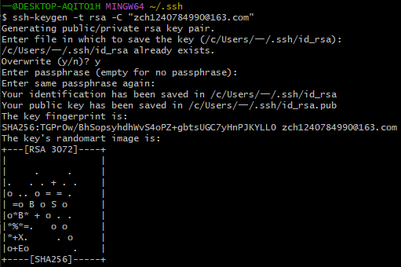
有时候，这一步可能会出现下图所示的生成失败的情况，这个时候可以使用管理员打开CMD，将上述命令在CMD中执行即可。
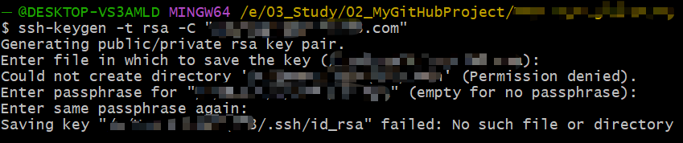
然后回到Git Bash中使用如下命令查看 SSH Key 的内容： 1
cat ~/.ssh/id_rsa.pub
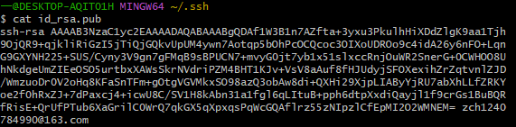
最后复制上述 SSH Key 的内容，填到 Github 网站即可。
在GitHub上添加SSH Key
接下来登录GitHub，点击右上角账户，选择settings进入SSH and GPG keys页面。然后点击Add SSH Key，填上Title(如果有多个的话最好起一个有意义的名字)，接着在Key文本框中粘贴上面的SSH
Key。
从本地仓库上传代码到 Github 上
检查是否与 Github 连接成功
添加 SSH Key 后，在 Git Bash 中输入如下命令查看是否成功连接 Github：
1
ssh -T git@github.com
有时候可能会出现报如下错误的情况
[https://zhuanlan.zhihu.com/p/521340971]，
ssh: connect to host github.com port 22: Connection refused
这个错误提示的是连接 github.com
的22端口被拒绝了。此时可以尝试连接 443 端口，做法是修改 SSH
的配置文件。在 Git Bash 中使用 vim 命令打开 config： 1
vim ~/.ssh/config
1
2
3Host github.com
Hostname ssh.github.com
Port 4431
:wq
1
ssh -T git@github.com
如果连接成功，则会提示如下信息
(如果是第一次的会提示是否continue，输入yes即可)： 1
2Hi xxxxx! You've successfully authenticated, but GitHub does not
provide shell access.
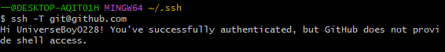
上传文件
首先进入本地仓库文件夹，如果还没有本地仓库文件夹，那么可以创建一个新的文件夹。通常的做法是，本地仓库文件夹的名称与
GitHub 仓库名称一致。新创建的文件夹没有 Git Branch
的概念，所以需要先创建分支。可以使用如下命令创建主分支： 1
git init
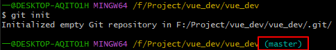
master 就是主分支名字，最新版的 GitHub 主分支名变成了
main ，但两者其实是一个意思。
如果我们从 GitHub 上手动下载了项目文件夹 (非 git clone
的方式下载的项目) ，那么此文件夹同样会没有分支名称。所以使用 Git Bash
进入项目文件夹时并不会显示 master 或 main
之类的分支名称。此时如果希望将修改后的项目代码上传到 GitHub
，那么同样需要使用上述命令创建分支。为了避免出现未知问题，建议使用
git clone 命令拉取项目代码，而非使用手动下载的方式。使用
git clone
拉取的项目文件夹会将整个项目的代码更新状态统一保存，方便后续查看。
一种简单的查看项目文件夹是否创建分支的方法：打开隐藏文件可视化，如果项目文件夹中出现
.git 文件夹，则说明此项目有分支信息，否则无分支信息。
然后使用如下命令与 Github 上新建项目连接： 1
git remote add origin xxx
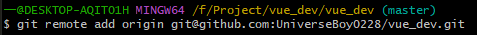
接着使用如下命令将本地仓库中的文件加入暂存区： 1
git add .
. 表示将本地文件夹下所有文件都加入暂存区。 如图所示：
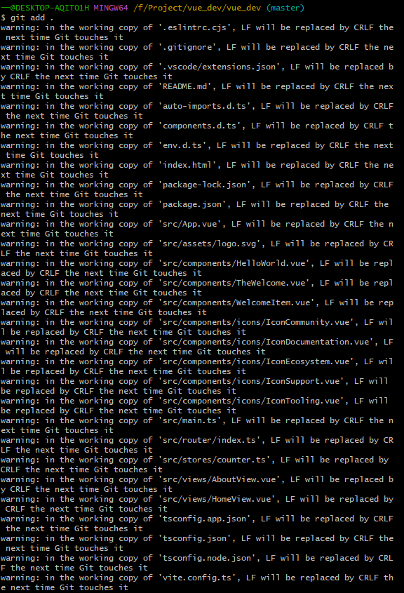
然后为本地上传文件添加注释，方便以后查看： 1
git commit -m "20240922"
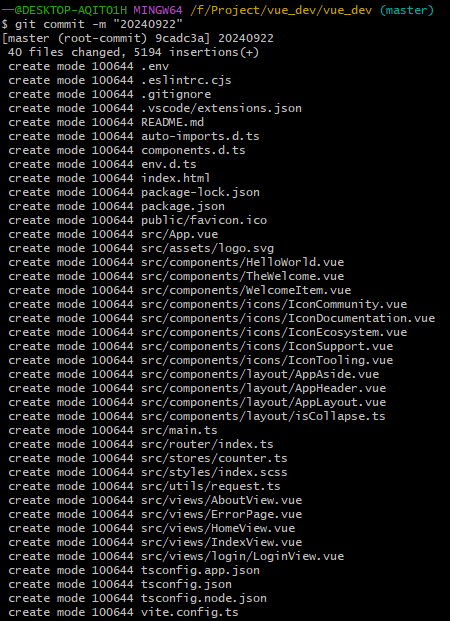
最后就可以提交本地文件到 Github 新建项目中了，使用如下命令：
1
git push origin master
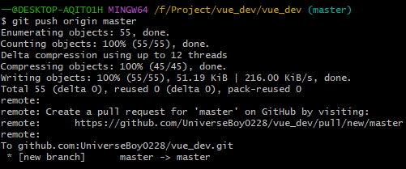
参考文献
https://zhuanlan.zhihu.com/p/138305054 https://zhuanlan.zhihu.com/p/193140870